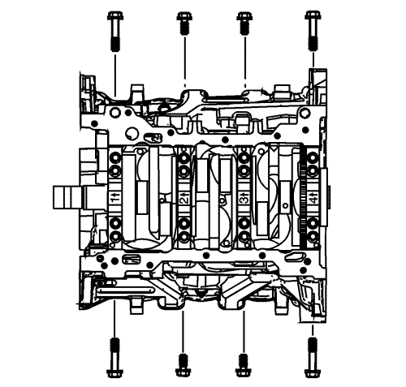
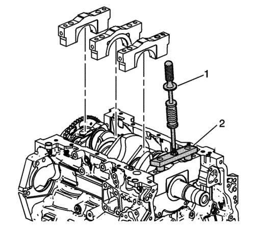
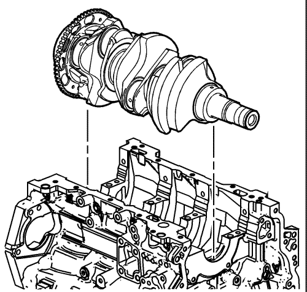
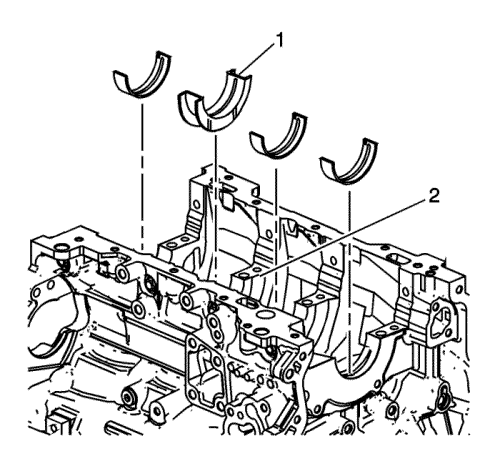

Desmontaje del cigüeñal y el cojinete
Herramientas especiales
| • | Adaptador de martillo de percusión GE 6125-1B |
| • | EN 49102 Herramienta de desmontaje de sombreretes de cojinete del cigüeñal |
Si desea informarse sobre herramientas regionales equivalentes, consultar Herramientas especiales .
Medición del juego axial del cigüeñal
- Coloque un dispositivo de medición en el morro del cigüeñal.
- Fuerce suavemente el cigüeñal a las posiciones delanteras y traseras extremas con una herramienta de palanca mientras vigila el movimiento del dispositivo de medición.
- El juego axial del cigüeñal no deberá exceder las especificaciones. Consultar Especificaciones mecánicas del motor : LF1 .
- Si se exceden las especificaciones, revise el desgaste o excesivo descentramiento del juego axial del cojinete axial y la pared axial del cigüeñal. Consultar Especificaciones mecánicas del motor : LF1 .
- Sustituya el cojinete axial o el cigüeñal si es necesario.
Desmontaje del cigüeñal

- Suelte los tornillos laterales de sombrerete de cojinete del cigüeñal.
- Suelte los tornillos exteriores de sombrerete de cojinete del cigüeñal.
- Suelte los tornillos interiores de sombrerete de cojinete del cigüeñal.

- Desmonte los sombreretes de cojinete del cigüeñal usando el adaptador GE 6125-1B (1) y la herramienta de desmontaje EN 49102 (2).

- Con las dos manos, levante en vertical el cigüeñal del bloque motor.
- Coloque el cigüeñal en un lugar seguro.

- Desmonte la chaveta de la nariz del cigüeñal, si presenta daños.
Desmontaje del cojinete del cigüeñal
- Prepare una pieza de cartón o similar, numerada 1-4 para identificar el cojinete. Muñón de cojinete de bancada están numerados desde la parte delantera del motor.

- Desmonte los semicojinetes superiores del cigüeñal del bloque motor. Tome nota de la posición del cojinete de empuje (1) en el muñón nº 3 (2).
- Coloque las mitades de cojinetes superiores del cigüeñal en el cartón en la posición correcta. Tenga en cuenta que el cojinete nº 3 es el cojinete de empuje.

- Desmonte los semicojinetes inferiores del cigüeñal de los sombreretes de cojinete del cigüeñal.
- Coloque los semicojinetes inferiores del cigüeñal sobre el cartón en las posiciones correctas.
| © Copyright Chevrolet Europe. All rights reserved |